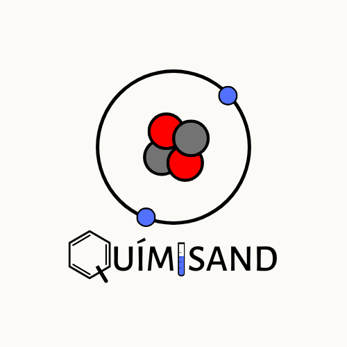

Quimisand · Universidad Nacional de Colombia · Sede Bogotá
Mallas curriculares interactivas
Elige tu carrera. Marca lo aprobado, mira qué puedes inscribir, planea los semestres que faltan y arma el horario con la oferta real del SIA.
Biología
163 créditos (+12 de inglés)
Abrir
Química
158 créditos
Abrir
Ingeniería de Sistemas y Computación
plan 2A74 (2023) · 165 créditos (+20 de nivelación)
Abrir
Medicina Veterinaria
209 créditos · 12 semestres
Abrir
El avance se guarda en tu navegador, por carrera. Datos públicos del SIA, sin sesión ni credenciales; confirma siempre en el SIA antes de inscribir.

¿Sugerencias, errores o necesitas ayuda?